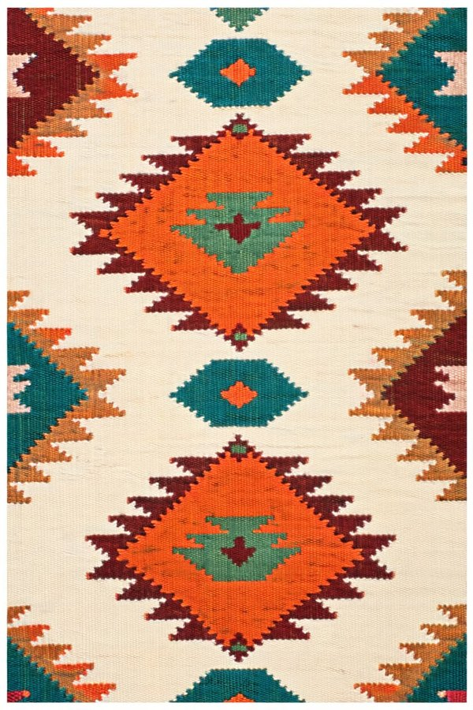
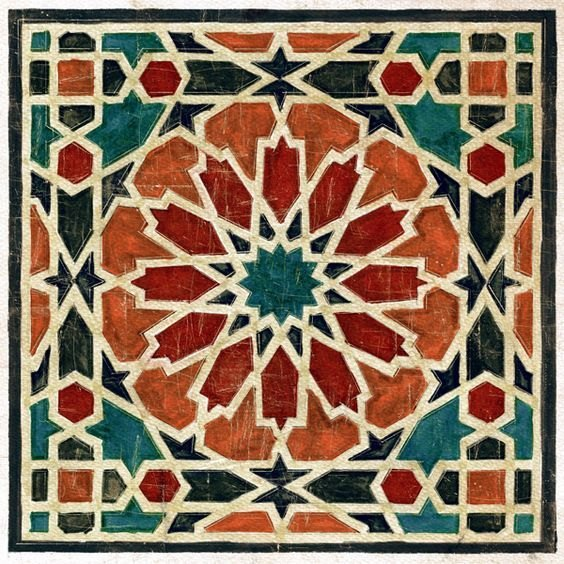

See how one small tool, slid over a pattern, can soften it, sharpen it or trace its edges.


Each one works on the same canvas.
The canvas is waiting for you.
We look at one tile, step by step. Tap a tile to change its colour and watch the middle one react.